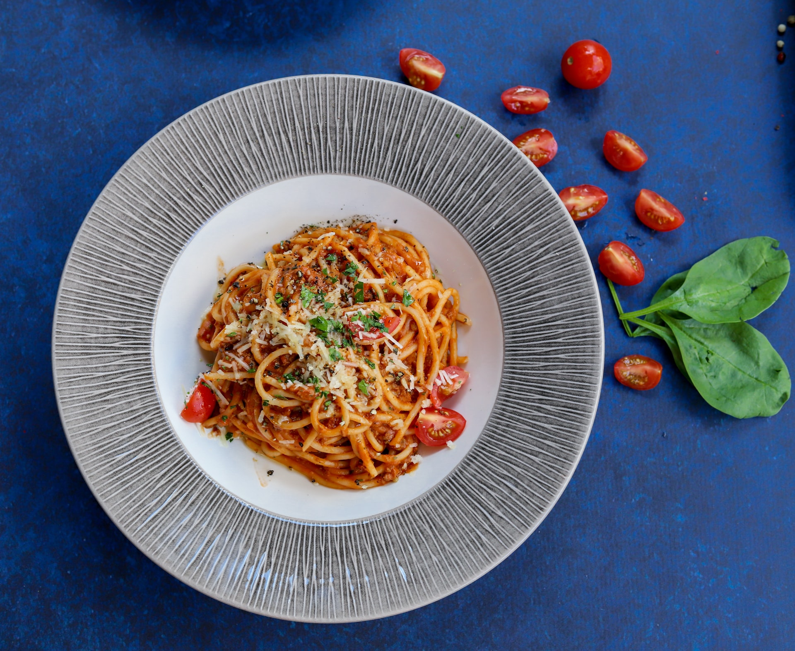

{% extends "partials/base.html" %}
{% set active_page = "index" %}

{% block content %}
<section class="hero">
    <header class="h-100 d-flex align-items-center justify-content-center">
        <h1 class="text-white">Fit Foods</h1>
    </header>
</section>
<section>
    <div class="container">
        <header class="my-4">
            <h2 class="text-center">Featured dishes</h2>
        </header>
        <div class="row g-4">
            <div class="col-lg-3 d-flex justify-content-center">
                <div class="card" style="width: 18rem;">
                    

                    <a href="./recipes/1" class="stretched-link"></a>
                </div>
            </div>
            <div class="col-lg-3 d-flex justify-content-center">
                <div class="card" style="width: 18rem;">
                    

                    <a href="./recipes/3" class="stretched-link"></a>
                </div>
            </div>
            <div class="col-lg-3 d-flex justify-content-center">
                <div class="card" style="width: 18rem;">
                    

                    <a href="./recipes/2" class="stretched-link"></a>
                </div>
            </div>
            <div class="col-lg-3 d-flex justify-content-center">
                <div class="card" style="width: 18rem;">
                    

                    <a href="./recipes/4" class="stretched-link"></a>
                </div>
            </div>
        </div>
    </div>
</section>
{% endblock %}

